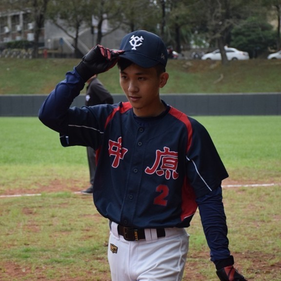
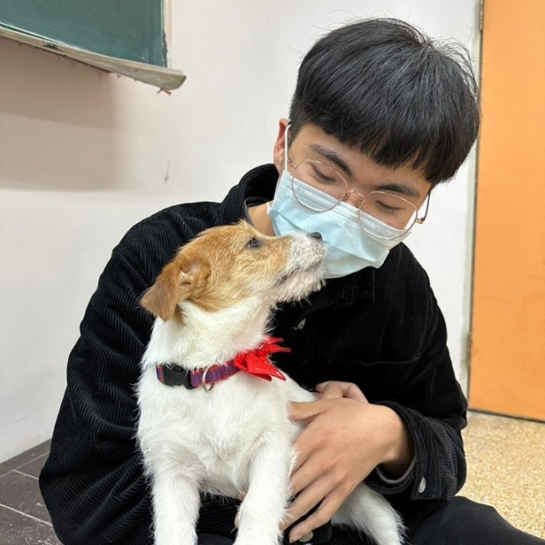
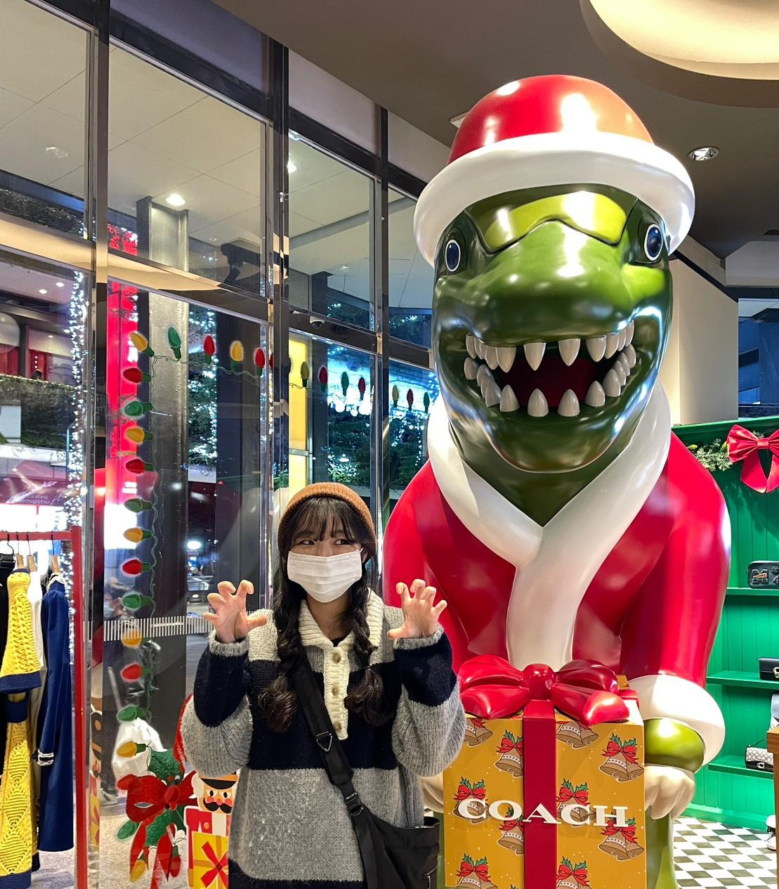
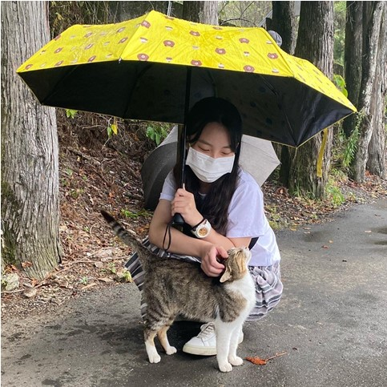
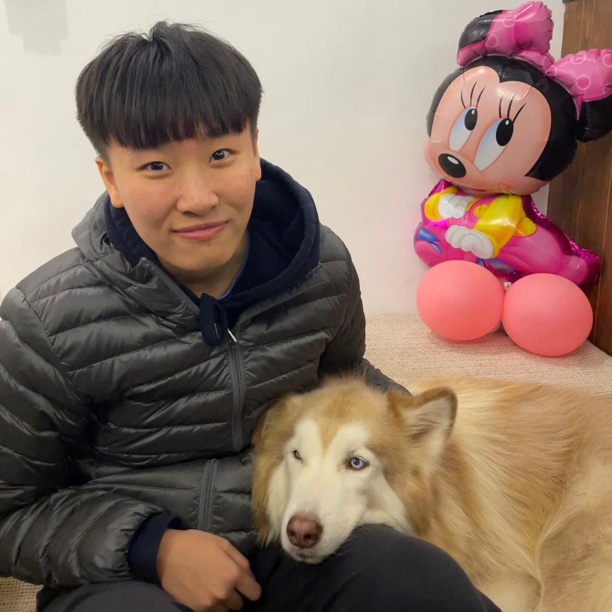

前端
這學期學的多媒體程式設計是我目前在資管學到最多東西的一節課，也是最多挫折最崩潰的課，我覺得html、css、js很有趣，程式打出來就有東西出現，終於學到很實用的程式課，也有很多功能等著去探索，但就是因為太多功能，我沒辦法一一掌握，有些跑版或是老師沒教的功能讓我很頭痛，需要花很多精力去研究也不一定能做出理想的作品，雖然有收穫但我必須花更多時間去精進這一方面的能力。
前端
剛開始覺得這門課程是不是會有關繪圖，開始幾堂課後驚覺竟然是跟程式有關係，雖然我對程式有興趣，但是離專業的還差的很遠；經過期中個人網站設計的摧殘後，我對排版還有動畫真的是無解，剛開始做時一樣一樣的設計出現在網頁上我覺得很有成就感，但是做到後面那個版面一直跑來跑去真的是會很想放棄；現在又要面臨更大的難題(期末專題)，希望我能夠順利做出我們想要的結果，這門課程結束後我會想繼續研究網頁設計，因為我覺得非常的有趣。
前端
經過了期中製作個人履歷網頁後，這次期末就要和甲班還有乙班的組員一起合力完成電商網頁的製作，我們甲班要負責前端相關的東西，乙班則負責後端的東西，為了要做出這個網頁，我們必須要運用所有上學期所學到的技能來做出和外面賣家相似的網站，希望我們可以做出很棒的網站。
後端
這個課程讓我頭好痛，好幾天沒睡覺，透過這一次我們和甲班一起合作，讓我們認識到別班的同學，也清楚了解到前端後端網頁要怎麼整合，大家要怎麼去溝通，也讓我們實作能力更好！
後端
我覺得這次前後端整合好難，甲班和乙班要透過一學期所學去做出一個網站，對我來說是個很大的挑戰，過程中遇到了許多困難，希望我們能一一克服，在最後能做出很棒的網站。
後端
這次前後端的的整合對我來說是一個很大的學習，前端和後端需要透過協作才能讓網站正常運作，過程中也遇到許多問題，很感謝那些幫助我們解決問題的人，讓這個網頁能順利執行。